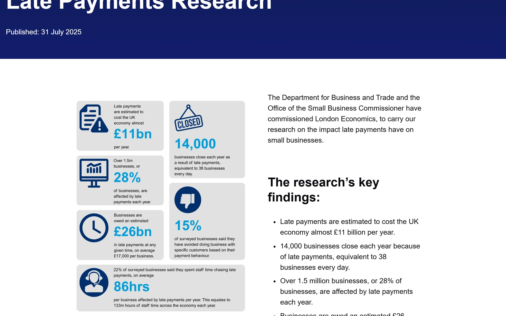
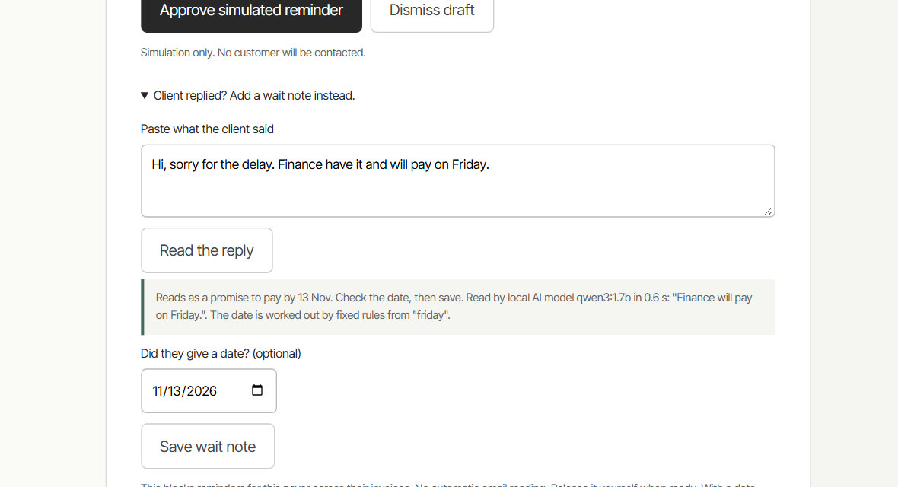

The invoice is in PayPal. The promise is in an inbox. The decision is in your head.
Jules is a freelance designer. She delivered the work three weeks ago. The invoice is now 12 days late.
Reminder tools solve the wrong half of this. They make chasing faster. They do not know when to hold back, and they do not remember what the client said. So freelancers do it by hand: reopen PayPal, search the inbox, try to recall the date, write the message, and hope nothing changed in between.
Jules is a constructed persona used for design, not an interviewed customer. The amounts in the sample are invented.
This is common, slow, and mostly a waiting problem.
of UK freelancers had a client payment delayed in the past 12 months.
IPSE Freelancer Confidence Index, Q1 2024 [1]of freelancers and small businesses waited more than a month to be paid. Almost half have written an invoice off.
FreeAgent survey, 1,600+ respondents, May 2024 [2]a year chasing late payments, on average, for the 22% of surveyed businesses that spend staff time on it.
London Economics for the UK Department for Business and Trade, July 2025 [3]Why are invoices late? IPSE's own explanation is not that clients ignore freelancers. Invoices go to a contact with no authority to pay, sit in multi-step approval, then wait for a payment run that may happen once a fortnight.[1]
So the honest answer a freelancer usually gets is a promise with a date. Nothing in a freelancer's toolkit keeps track of it.

These are separate studies with different samples and wording. We do not add or average them. The second and third cover small businesses as well as freelancers.
What late payment burns in the UK, every year.
owed to businesses in late payments at any given time, about £17,000 per affected business.
estimated yearly cost of late payment to the UK economy.
of staff time spent chasing across the economy each year.
businesses that close because of late payment. That is 14,000 a year.
All four figures come from the same government-commissioned study, published 31 July 2025.[3] It also found that over 1.5 million businesses, 28% of them, are affected each year.
These are economy-wide UK estimates for businesses of every size. They show how large the problem is. They are not what Oweleaf recovers, and we make no claim about money recovered.
One screen. Three jobs. No chasing by accident.
It checks PayPal for you.
Oweleaf reads your invoices from PayPal and sorts them: late, paid, not due yet. Paid and not-due invoices cannot be chased at all.
It reads what the client said.
Client replied? Paste their message. A small AI model on your own computer reads it in under a second and tells you what it is: a promise to pay, “already paid”, a request for more time, or a dispute. Fixed rules work out the date. Oweleaf then goes quiet for that client until that day, on every one of their invoices.
It follows up only when it is fair.
The day after the promised date, Oweleaf looks at PayPal again. Paid: nothing happens. Still unpaid: a short follow-up is ready that mentions the client's own date. You read it and approve it. PayPal is read one more time before anything goes out.

The whole journey, in four steps.
- Open the sampleNo login, no install. It opens on a broken promise and a kept wait.
- Pick an invoiceMarcus, Priya or Amelia. Each shows a different decision.
- Read and decideApprove one reminder, dismiss it, or paste the client's reply and save their date.
- Or just askThe Ask Oweleaf box answers “who should I chase today?” in plain words.
Why a person approves every send
This is someone's money and someone's client. Software prepares. A person decides.
Why the AI reads and writes, and rules decide
We measured it. On ten test replies the model named the type of reply correctly seven times, in about 0.2 seconds each. Asked for dates, it failed, and it obeyed an instruction hidden inside one client message. So the model reads language and drafts wording. Fixed rules work out every date, got all ten right, and cannot be talked into anything.
Why it runs on your computer
Your PayPal keys and client notes stay on your machine. There is no Oweleaf server to trust or to leak.
Why we say what PayPal really sends
PayPal's reminder email uses PayPal's standard wording, whatever an app passes in.[4] Oweleaf decides whether and when that reminder goes. Your drafted words are yours to copy or open in your own email.
One late invoice where the client has replied.
By hand
6 steps
across PayPal, your inbox and your memory- Open PayPal, find the invoice, check whether it is paid.
- Search your inbox for what the client said.
- Remember the date they promised, or put it in a diary.
- On that date, do steps 1 and 2 again.
- Write a follow-up from scratch.
- Send it, hoping nothing changed since you looked.
With Oweleaf
2 actions
on one screen- Save the client's date once.
- Approve the follow-up Oweleaf prepares if the date passes unpaid.
The PayPal check, the waiting and the wording are done for you. If the client pays in time, you do nothing.
We have not timed real freelancers, so we do not quote hours or money saved. The 86 hours a year above is the published baseline, not our result. What we can show is the steps removed, and you can count them yourself in the sample.
Ask Claude or ChatGPT about your invoices. They can read. They cannot send.
Oweleaf speaks MCP, the open standard AI assistants use to reach tools. Three read-only tools: todays_plan, client_promises and draft_for. Every assistant gets the same answer a person gets on screen, because it is the same rules.
Try it now, with sample data
Add this address as a custom connector in Claude, ChatGPT's developer-mode connectors, or any MCP client that accepts a remote URL. It serves invented invoices only.
https://oweleaf.vercel.app/api/mcpUse it on your real PayPal data
Run Oweleaf on your computer, then point a local MCP client at it. Your invoices never leave your machine.
claude mcp add oweleaf -- node src/mcp-server.jsNo tool can send, approve or change anything. Each is marked read-only, and invoice text is treated as data, never as instructions. The hosted address is a demonstration over sample invoices. It does not touch PayPal.
PayPal for the facts. A small model for the words. Rules for the decision.
node run.mjs --testnode scripts/load-check.mjsBuilt to scale without a server bill. Each freelancer runs their own copy with their own PayPal keys, so there is no central service to pay for or to overload. This page and the sample are static files on a content network, and the sample keeps its state in your browser tab. A hundred visitors or a hundred thousand cost the same.
Real
A recorded run on a PayPal Sandbox account on 12 November 2026: four synthetic invoices read, a model-written draft, a wait, a release, and a successful reminder call. A separate real-model run on client replies is recorded inevals/REPLY_READER_EVAL.json.Sample
This site's click-through, the assistant and the hosted MCP address use invented invoices and fixed rules. No PayPal or model calls. Labelled on screen. If your Chrome has its built-in on-device AI model installed, the sample uses it to read pasted replies and says so; otherwise it says it used rules. To see the local model run:node run.mjs --demo --ai with Ollama.Not claimed
Real customers, money recovered, faster payment, production security, or that the model beats larger models. The reminder email PayPal delivers was not inspected in an inbox.Built by someone who has drawn this line before.
Oweleaf is by Vaibhav Lalwani.
His earlier public project, ReqKeeper, settles payment requests on one rule: an agent may propose, a human approves the exact action, and a second payment is refused. Oweleaf applies the same rule to a more everyday problem. Software may read, remember and prepare. A person decides when a client hears from them.
The project started as an earlier invoice-agent experiment and was rebuilt during the hackathon around one user and one decision: chase, or wait.
Check every number.
- IPSE, “Here's how clients get away with paying freelancers later”, 2 May 2024. Freelancer Confidence Index, Q1 2024. ipse.co.uk
- FreeAgent, “Research reveals payment problems”, 30 May 2024. Survey of over 1,600 freelancers and small businesses. A vendor survey. freeagent.com
- Office of the Small Business Commissioner, late payments research by London Economics for the Department for Business and Trade, 31 July 2025. smallbusinesscommissioner.gov.uk
- PayPal REST API specifications, Invoicing v2,
notificationschema used by the remind call: user-provided subject and note are not honored. github.com/paypal
Sources 1 to 3 were opened and checked on 12 November 2026. Source 4 was read from PayPal's published specification the same day.